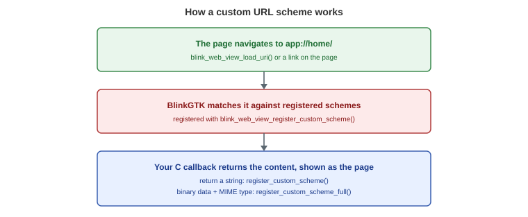
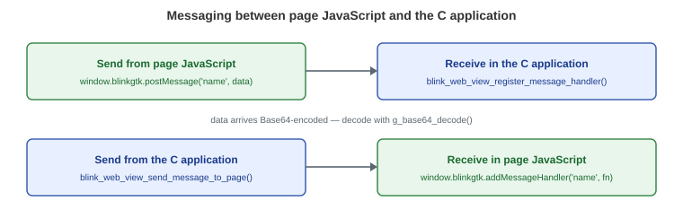

Version: v1.1.0
Last updated: 2026-07-30
APIs that connect your application and the web page in both directions:
ebook://book/chapter1.html. An e-book reader can decrypt
the contents ofBeyond signatures, each API description includes its
behavioral details —
which thread it runs on, when it fires, who frees which memory, and
what
happens in edge cases. These descriptions were written against the
current
implementation; points that may improve in future versions are marked
with
"in the current implementation".
/* Register the "app" scheme. The application answers app://... requests */
static char* on_app_scheme(BlinkWebView *view, const char *uri, gpointer data) {
return g_strdup("<html><body><h1>Served by the app</h1></body></html>");
}
blink_web_view_register_custom_scheme(view, "app", on_app_scheme, NULL);
blink_web_view_load_uri(view, "app://home/");| I want to… | API |
|---|---|
| Register a custom scheme (text response) | blink_web_view_register_custom_scheme() |
| Register a custom scheme (binary response + MIME) | blink_web_view_register_custom_scheme_full() |
| Receive JS → C messages | blink_web_view_register_message_handler() |
| Receive messages as a GObject signal (multiple subscribers) | the message-received signal |
| Unregister a message handler | blink_web_view_unregister_message_handler() |
| Send C → JS messages | blink_web_view_send_message_to_page() |
| Run JavaScript from C | blink_web_view_execute_javascript() |
| Inject a script | blink_web_view_inject_user_script() |
| Inject CSS | blink_web_view_inject_user_stylesheet() |
| Remove everything injected | blink_web_view_remove_all_user_scripts() |

app / blinkgtk / res /
resource / ebook — plus any names addedBLINKGTK_EXTRA_SCHEMES environment variable
(comma-separated)register_custom_scheme() cannot
introduce new names<img src="app://...">, and
fetch() / XHR fromRegisters a URI scheme. When a load for that scheme occurs, your
callback is
called instead of any network access, and the string it returns becomes
the
response.
Signature:
typedef char* (*BlinkCustomSchemeCallback)(BlinkWebView* web_view,
const char* uri,
gpointer user_data);
void blink_web_view_register_custom_scheme(BlinkWebView* web_view,
const char* scheme,
BlinkCustomSchemeCallback callback,
gpointer user_data);g_strdup() or
similar. Ownershipg_free(). The response body0x00. Useregister_custom_scheme_full() for binary data such as
imagesNULL produces an empty page (HTTP
200, zero-byte body).NULL as callback unregisters the
schemeThe binary-capable variant. Use it for anything that may contain
0x00 —
images, audio, fonts.
Signature:
typedef GBytes* (*BlinkCustomSchemeBytesCallback)(BlinkWebView* web_view,
const char* uri,
char** out_mime,
gpointer user_data);
void blink_web_view_register_custom_scheme_full(BlinkWebView* web_view,
const char* scheme,
BlinkCustomSchemeBytesCallback callback,
gpointer user_data);GBytes (binary-safe because it
carries its owng_bytes_unref() on itout_mime with something like
g_strdup("image/jpeg"); the engineg_free(). If you leave it NULL,
the type is guessed fromNULL gives the same empty page (200) as the
text variantExample: serving an image from the application
static GBytes* on_ebook_scheme(BlinkWebView *view, const char *uri,
char **out_mime, gpointer data) {
if (g_str_has_suffix(uri, "/cover.jpg")) {
gsize len = 0;
gchar *bytes = NULL;
if (g_file_get_contents("/path/to/cover.jpg", &bytes, &len, NULL)) {
*out_mime = g_strdup("image/jpeg");
return g_bytes_new_take(bytes, len);
}
}
return NULL; /* becomes an empty page (200) */
}Your callback receives the entire URI, such as
ebook://book/chapter1.xhtml?page=2. Splitting host and path
and interpreting
the query are up to you. Three things real applications trip on:
%E8%A1%A8%E7%B4%99.xhtml. Without
g_uri_unescape_string() the file.. through exposes files outside your content root. Do the
check after%2e%2e)?; if some
feature (suchstatic char* path_from_uri(const char *uri) {
const char *p = strstr(uri, "://");
if (!p) return NULL;
const char *slash = strchr(p + 3, '/'); /* skip the host part */
char *path = g_strdup(slash ? slash + 1 : "");
char *q = strpbrk(path, "?#"); /* strip query/fragment */
if (q) *q = '\0';
char *decoded = g_uri_unescape_string(path, NULL); /* 1: percent-decode */
g_free(path);
if (decoded && strstr(decoded, "..")) { /* 2: reject traversal */
g_free(decoded);
return NULL;
}
return decoded; /* path relative to your content root */
}| Scheme | Intended use |
|---|---|
app |
General (the application's own content) |
ebook |
E-book readers |
res / resource |
Generic resources |
blinkgtk |
Internal resource references |
| (any name) | Add before startup with
BLINKGTK_EXTRA_SCHEMES=myapp,plugin |
Why pre-registered: classifying a scheme as a
"standard scheme" (one with
scheme://host/path structure, where relative URLs resolve)
and as a secure
context happens early in engine startup and cannot be done later.
register_custom_scheme() runs after that point, so it
assigns a handler
to an already-registered name rather than adding new names.
A limitation of BLINKGTK_EXTRA_SCHEMES (current
implementation): schemes
added via the environment variable are rejected for fetch()
calls from page
JavaScript by a renderer-side gate (navigations and subresources such
as
<img> do work). If your SPA uses
fetch(), use one of the five built-in
schemes.
Local content can be shown over file://, but
file:// pages cannot use
fetch() and have a peculiar origin. Custom schemes are
treated as a real
origin with a secure context (HTTPS-equivalent), so
fetch(), Service
Workers and secure-context-only web APIs just work. The EPUB
reader
BlinkGTK-Readium serves the entire Readium SPA and all book data
over
ebook:// for exactly this reason — the
fetch()-based web app runs
unmodified where file:// could not support it.
| Item | Current implementation |
|---|---|
| Loads that fire the callback | Navigations / subresources (<img> etc.) /
fetch() / XHR |
| Callback thread | GTK main thread, synchronous (UI blocked until return) |
| Process | The application (browser) process; renderers stay separate |
| Ownership of returned values | Transfers to the engine (g_free() /
g_bytes_unref()) |
| Content-Type | out_mime wins; otherwise guessed from the
extension |
| Extension guesses | .html/.htm→text/html, .css,
.js/.mjs, .json, .svg,
.png, .jpg/.jpeg, .webp,
.txt. Unknown extensions become
text/html |
| charset | Text-like MIME types always get utf-8 (not
configurable) |
Returning NULL |
Empty page (HTTP 200, zero bytes) — not a 404 |
| Status codes | Always 200; no way to specify |
| Redirects | Not possible (no way to return 3xx). Steer with HTML/JS in the body instead |
| Re-registering a scheme | Silently overwrites (last one wins) |
| Registration scope | Process-wide. If several WebViews register the same scheme, the last registration serves all of them |
Multiple WebViews: there is one registration per
scheme per process. To
serve different content per WebView, branch on the callback's
web_view
argument or use different scheme names. Also, in the current
implementation
destroying a WebView does not unregister its schemes —
unregister
(callback=NULL) before destroying it, or a handler pointing at
the destroyed
WebView remains registered.
Security note: the current implementation does not
check which page
initiated a request. If a handler returns sensitive data, either
avoid
displaying external content in the same WebView or validate URIs
strictly.
A window.blinkgtk object is made available to JavaScript
running in the page.

| Direction | JavaScript side | C side |
|---|---|---|
| JS → C | window.blinkgtk.postMessage('name', data) |
received via
blink_web_view_register_message_handler() |
| C → JS | received via
window.blinkgtk.addMessageHandler('name', fn) |
blink_web_view_send_message_to_page() |
window.blinkgtk appears after the page finishes
loading (onload).window.addEventListener('load', ...) orwindow). The page must call
addMessageHandlerdata that reaches C is a Base64-encoded
byte sequence. Decode itg_base64_decode(). The reverse direction (C → JS) is
notRegisters a JS → C message handler.
Signature:
typedef void (*BlinkMessageCallback)(const char* name,
const guint8* data,
gsize length,
gpointer user_data);
void blink_web_view_register_message_handler(BlinkWebView* web_view,
const char* name,
BlinkMessageCallback callback,
gpointer user_data);name is the channel name. Use alphanumeric
characters only (namesmessage-received signal belowuser_data is your responsibility (there
is no destroyWhat you can pass from JavaScript (the
data of postMessage(name, data)):
| JS type | Behavior |
|---|---|
| string | Base64-encoded as UTF-8; non-ASCII text is safe |
ArrayBuffer |
Base64-encoded as raw bytes (binary-transparent) |
Uint8Array and other TypedArrays |
Not treated as ArrayBuffer — falls
through to JSON stringification ({"0":72,...}). Pass
.buffer instead |
| object / array / number | JSON.stringify then Base64. If the JSON
contains non-ASCII characters an exception is thrown and
nothing is delivered. For objects containing e.g. Japanese,
JSON.stringify yourself and pass the string |
null / undefined |
Empty data (length 0) |
Independently of the per-channel callbacks, every
message is also emitted
as the GObject signal message-received. Any number of
g_signal_connect()
subscribers can listen, which suits cross-cutting concerns such as
logging.
/* name: channel, data: Base64 string */
static void on_any_message(BlinkWebView *view, const char *name,
const char *data, gpointer user_data) {
g_print("message on channel '%s'\n", name);
}
g_signal_connect(view, "message-received", G_CALLBACK(on_any_message), NULL);The signal is not filtered by channel — check name in
your handler.
Unregisters a handler.
Signature:
void blink_web_view_unregister_message_handler(BlinkWebView* web_view,
const char* name);Note the post-unregister behavior: messages to an
unregistered channel
(including channels that were never registered) are silently
dropped — no
error anywhere. If messages seem to vanish during development, check
the
channel name and registration first. The message-received
signal keeps
firing regardless of unregistration.
Sends a message from C to the page's JavaScript.
Signature:
void blink_web_view_send_message_to_page(BlinkWebView* web_view,
const char* name,
const char* data);The page registers its handler first:
<script>
window.addEventListener('load', function () {
window.blinkgtk.addMessageHandler('page-turn', function (data) {
console.log('instruction from the app:', data);
});
});
</script>Know when it does not arrive: this function has
no queue. Messages
sent before the page finishes loading, or before the page calls
addMessageHandler, are silently discarded
(no return value, no error).
The reliable pattern is to let the page announce readiness
first:
/* Page side: send 'ready' once prepared
* window.blinkgtk.postMessage('ready', '');
* C side: start sending only after 'ready' arrives */
static void on_ready(const char *name, const guint8 *data,
gsize length, gpointer user_data) {
BlinkWebView *view = BLINK_WEB_VIEW(user_data);
blink_web_view_send_message_to_page(view, "config",
"{\"theme\":\"dark\"}");
}
blink_web_view_register_message_handler(BLINK_WEB_VIEW(view), "ready",
on_ready, view);| Item | Current implementation |
|---|---|
When window.blinkgtk appears |
After each page's onload completes (re-injected per navigation) |
| C callback thread | GTK main thread |
| C handler lifetime | Same as the WebView; survives navigations |
| JS handler lifetime | Same as the document; must re-register per navigation |
| JS → C encoding | Base64 (decode with g_base64_decode()) |
| C → JS encoding | None (raw string) |
| Sending before load completes (C → JS) | Silently discarded (no queue) |
| Messages to unregistered channels (JS → C) | Silently discarded |
| Re-registering a channel | Overwrites (both directions) |
| Size limit | No explicit engine-side limit. Base64 inflates data ~1.33×; consider serving large data over a custom scheme instead |
| iframes | window.blinkgtk is injected into the main frame only.
Same-origin iframes can reach it via parent.blinkgtk |
Security note: postMessage can be
called by any script in the page
(there is no sender verification). In WebViews that display external
content
or third-party scripts, never trust incoming data — validate it on the C
side.
Injects JavaScript into the page.
Signature:
void blink_web_view_inject_user_script(BlinkWebView* web_view,
const char* script,
gboolean inject_at_document_start);inject_at_document_start=FALSE: runs once,
immediately in the currentblink_web_view_execute_javascript()).
It is notinject_at_document_start=TRUE: known issue —
non-functional in theload-changed signal instead:static void on_load(BlinkWebView *view, int ev, const char *uri, gpointer data) {
if (ev == BLINK_LOAD_FINISHED) {
blink_web_view_execute_javascript(view,
"document.title = '[MyApp] ' + document.title;", NULL, NULL);
}
}
g_signal_connect(view, "load-changed", G_CALLBACK(on_load), NULL);Injects CSS into the current page and all later pages.
Signature:
void blink_web_view_inject_user_stylesheet(BlinkWebView* web_view,
const char* css);Useful for things like a reading app's dark theme or line-height
adjustments —
changing the presentation without touching the content. Behavioral
details:
<style> element.
Because it is added after/* Idempotent replacement: remove the previous injection, then re-inject */
blink_web_view_execute_javascript(view,
"var e = document.getElementById('myapp-style'); if (e) e.remove();",
NULL, NULL);
char *js = g_strdup_printf(
"var s = document.createElement('style');"
"s.id = 'myapp-style'; s.textContent = '%s';"
"document.head.appendChild(s);", escaped_css);
blink_web_view_execute_javascript(view, js, NULL, NULL);
g_free(js);Removes all registered scripts and stylesheets (the
name says scripts, but
CSS is included).
Signature:
void blink_web_view_remove_all_user_scripts(BlinkWebView* web_view);The effect is "stop applying to future pages."
<style> elements already
injected into the currently displayed page are not removed. To remove
them
immediately, inject with an id as in the idempotent pattern
above and
remove() it via execute_javascript().
Runs JavaScript in the current page's main frame.
Signature:
typedef void (*BlinkJavaScriptCallback)(const char* result, gpointer user_data);
void blink_web_view_execute_javascript(BlinkWebView* web_view,
const char* script,
BlinkJavaScriptCallback callback,
gpointer user_data);Behavioral details:
callback to receive the value of the expression
as a string; passNULL to fire and forgetJSON.stringify() on the script side is
the reliableblink_web_view_execute_javascript(view,
"JSON.stringify({title: document.title, y: window.scrollY})",
on_result, NULL);asyncfetch() through the return value. Have the page
sendwindow.blinkgtk.postMessage() when
they completeload-changed'sBLINK_LOAD_COMMITTED onwards. On errors (e.g. after the
WebView isThe application serves app://home/, waits for the page
to announce
readiness, then sends configuration; button clicks notify the C
side.
#include <blink_gtk/blink_gtk.h>
#include <gtk/gtk.h>
static char* on_app_scheme(BlinkWebView *view, const char *uri, gpointer data) {
return g_strdup(
"<html><body>"
"<h1>Served by the app</h1>"
"<button onclick=\"window.blinkgtk.postMessage('clicked','hello')\">"
"Notify C</button>"
"<script>"
"window.addEventListener('load', function () {"
" window.blinkgtk.addMessageHandler('config', function (d) {"
" document.body.style.background = d;"
" });"
" window.blinkgtk.postMessage('ready', '');" /* announce readiness */
"});"
"</script>"
"</body></html>");
}
static void on_message(const char *name, const guint8 *data,
gsize length, gpointer user_data) {
if (g_strcmp0(name, "ready") == 0) {
/* The page is ready — sends are reliable from here on */
blink_web_view_send_message_to_page(BLINK_WEB_VIEW(user_data),
"config", "#fffbe6");
return;
}
gsize out_len = 0;
guchar *decoded = g_base64_decode((const gchar *)data, &out_len);
g_print("from the page '%s': %.*s\n", name, (int)out_len, decoded);
g_free(decoded);
}
int main(int argc, char **argv) {
blink_gtk_init(&argc, &argv);
GtkWidget *win = gtk_window_new();
gtk_window_set_default_size(GTK_WINDOW(win), 800, 600);
GtkWidget *view = blink_web_view_new();
gtk_window_set_child(GTK_WINDOW(win), view);
blink_web_view_register_custom_scheme(BLINK_WEB_VIEW(view), "app",
on_app_scheme, NULL);
blink_web_view_register_message_handler(BLINK_WEB_VIEW(view), "ready",
on_message, view);
blink_web_view_register_message_handler(BLINK_WEB_VIEW(view), "clicked",
on_message, view);
gtk_window_present(GTK_WINDOW(win));
blink_web_view_load_uri(BLINK_WEB_VIEW(view), "app://home/");
return blink_gtk_run_main_loop();
}Build:
cc -o app-integration app-integration.c $(pkg-config --cflags --libs blinkgtk-0.1)The EPUB reader BlinkGTK-Readium runs "a web application shipped as a
GTK
product" using only the APIs on this page. Design points worth
borrowing:
ebook://fetch() from the SPA works same-origin, so the
web-app side needsregister_custom_scheme_full() — cover images
andGBytes with an explicit
MIME type.., then route on the leading path segment
(reader,reader,shelf and store keep each C handler
single-purpose and safe to add or| Limitation | Workaround |
|---|---|
inject_user_script(document_start=TRUE) is
non-functional |
Use load-changed + execute_javascript()
(above) |
| Custom scheme status code is always 200 | Express errors in the body HTML |
| No redirects | Steer via HTML/JS in the body |
fetch() unavailable on
BLINKGTK_EXTRA_SCHEMES schemes |
Use one of the five built-in schemes |
| C → JS sends are dropped before load completes | The ready handshake (above) |
| Scheme registration is process-wide | Branch on the web_view argument; unregister before
destroying a WebView |
load-changed and other signals| Version | Changes |
|---|---|
| v1.1.0 (2026-07-30) | Substantially expanded against the verified implementation — behavioral details (threads, timing, ownership, edge cases), practical patterns such as the ready handshake, and known limitations. Corrected the previous edition's "NULL returns 404" (the actual behavior is an empty 200 page) |
| v1.1.0 | First edition of this page (binary-capable schemes are v1.1.0; the rest date from the v1.0 series) |